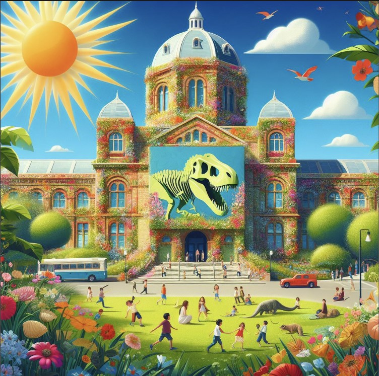

Luukku 10
Vuonna 1923 tapahtui merkittävä käänne Luonnontieteellisen museon historiassa, kun Luomuksen Eläintieteen yksikön kokoelmat löysivät uuden kodin Pohjoiselta Rautatiekadulta. Tämä merkitsi samalla Luonnontieteellisen museon syntymistä ja aloitti uuden aikakauden suomalaisen luonnon tutkimuksessa ja esittelyssä. Nyt onkin oiva tilaisuus mennä Helsingissä sijaitsevaan luonnontieteelliseen museoon tukimaan luonnontieteen historiaa, tulevaisuutta ja nykypäivää!

Jos kiinnostuksesi luonnontieteitä kohtaa heräsi, linnki tapahtumaan on tästä